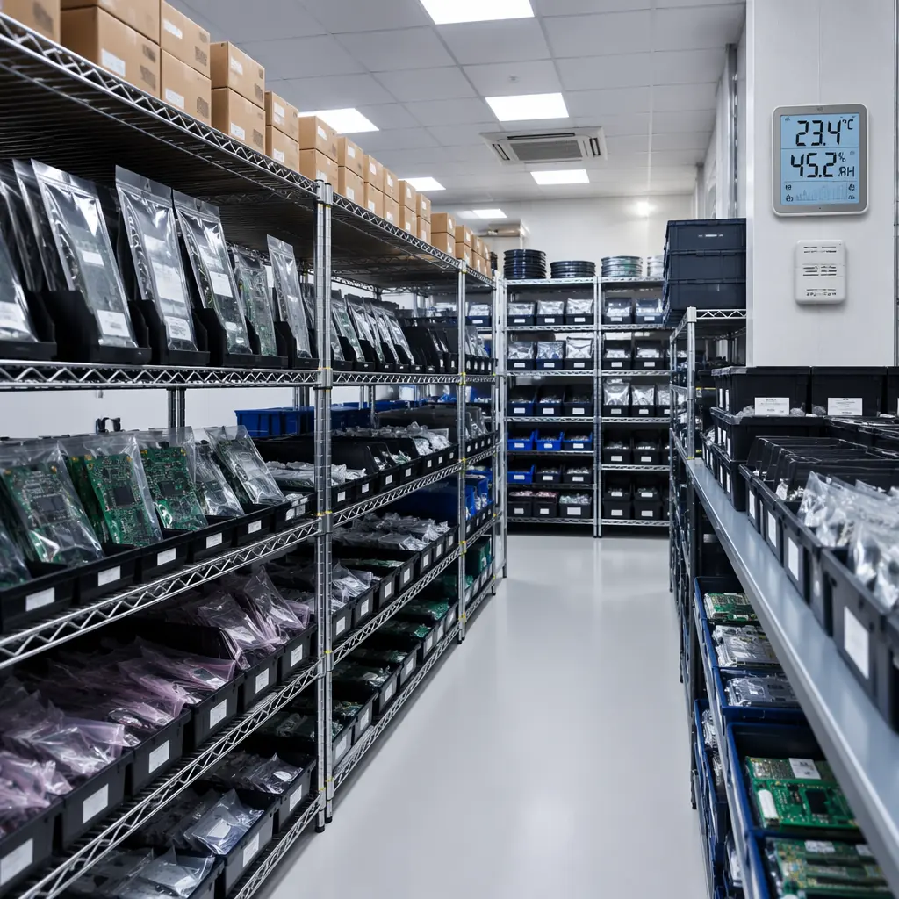
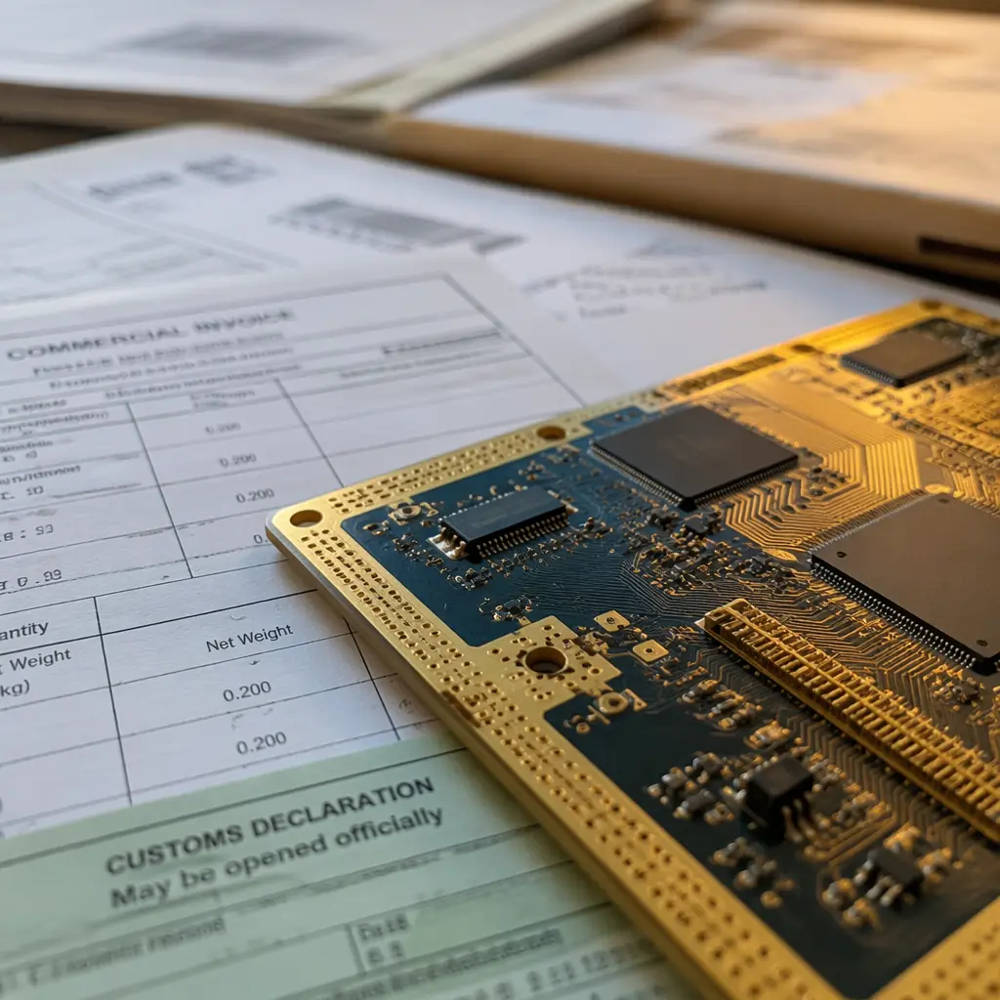

In 2022, a single PCB factory closure in Kunshan — triggered by a local COVID lockdown — idled 3 automotive assembly lines across Europe within 72 hours. Not because those factories bought from Kunshan directly. Because their Tier-2 connector suppliers depended on one PCB vendor that nobody had mapped. This is the reality of modern electronics procurement: your supply chain is only as strong as the weakest link you haven't discovered yet. For procurement managers responsible for PCB sourcing, the risk landscape has transformed. Tariff policy can change by executive order overnight. Taiwan Strait tensions introduce existential concentration risk — 63% of the world's advanced PCB substrates come from Taiwanese fabs. Single-source dependencies that looked fine on a 2019 sourcing spreadsheet are now board-level risks.
This guide is not a generic risk management overview. It is a procurement-specific, action-oriented playbook drawn from the reality of sourcing PCBs from Asia in 2026. Huaxing PCBA operates 8 SMT lines across 80,000㎡ of manufacturing floor, certified to ISO 9001 and IATF 16949, serving procurement teams in automotive, medical, industrial, and telecom verticals. The patterns we see across hundreds of customer supply chains inform every recommendation below.
The Real Cost of a Broken PCB Supply Chain
Most procurement organizations treat PCB supply chain disruptions as an operations problem. Finance treats them differently — and the numbers explain why. The hard costs of a PCB supply failure cascade through four stages, each multiplying the damage:
| Disruption Stage | Typical Timeline | Cost Impact | Real-World Trigger |
|---|---|---|---|
| Tier-1: Production halt | Day 1–3 | $15,000–$50,000/day idle line cost | Missed shipment, quality rejection at IQC |
| Tier-2: Premium spot buy | Day 3–7 | 40–80% premium over contract pricing | Rush order at alternative fab, air freight |
| Tier-3: Customer penalty | Day 7–14 | Contractual penalties + lost goodwill | Missed end-customer delivery commitments |
| Tier-4: Re-qualification costs | Month 1–3 | $25,000–$80,000 for new supplier PPAP | Switching suppliers requires full PPAP re-run |
Factory Reality: During the 2021–2023 semiconductor and substrate shortage, Huaxing PCBA saw Tier-2 spot-buy premiums for standard 8-layer PCBs spike from $5.20/unit to $9.80/unit — an 88% increase — when customers' primary suppliers went on allocation. The customers with qualified second sources paid $5.80/unit. The difference on a 50,000-unit annual program: $200,000 in unplanned cost.
Tariff Exposure Has Become a Quarterly Variable, Not an Annual Constant
Section 301 tariffs on Chinese PCBs started at 25% in 2018 and have since fluctuated with the political cycle. Procurement teams that locked in annual budgets at 25% found themselves absorbing 35–45% effective rates on certain HTS codes when additional rounds were imposed mid-year. The lesson: treat tariff exposure as a variable input with quarterly re-forecasting, not a fixed line item. We'll cover tariff engineering strategies in detail below — including country-of-origin rules that procurement teams systematically underutilize.
Taiwan Strait Risk Is Not Hypothetical — It's a Concentration Problem
Taiwan produces 63% of global advanced IC substrates and over 50% of the world's ABF (Ajinomoto Build-up Film) substrates used in high-performance computing PCBs. Any disruption to Taiwanese exports — whether from military action, blockade, or even extended port disruption — would cascade through the global PCB supply chain within 4–6 weeks. For procurement managers, the question isn't "will it happen?" but "can my bill of materials survive 8 weeks of zero supply from Taiwan?" See our dual-sourcing strategy guide for geographic diversification frameworks.
The Hidden Single-Source Vulnerability in Every BOM
Most procurement teams can name their direct PCB suppliers. Far fewer have mapped which of those suppliers share the same upstream laminate or copper foil sources. We've seen cases where three "independent" PCB suppliers all sourced FR-4 laminate from the same Taiwanese mill — creating a single point of failure masked as supply chain diversification. A proper risk assessment traces material provenance at least one tier upstream.
Geographic Diversification: Beyond the "All China" Model
For two decades, "China + 1" was a slideshow concept. In 2026, it's a board-level directive at most electronics OEMs. But the operational reality of diversifying PCB sourcing beyond China is messier than consultants suggest. Different Southeast Asian countries offer different capability profiles, and the cost-delta-versus-risk-reduction calculus is not uniform.
| Country | PCB Capability Ceiling | Cost vs. Shenzhen | Key Risk Mitigated | Lead Time |
|---|---|---|---|---|
| Vietnam | Up to 12 layers, standard FR-4, limited HDI | +8–15% | China tariff exposure, labor concentration | 3–5 weeks |
| Thailand | Up to 16 layers, HDI any-layer, automotive-grade | +12–20% | China tariff, automotive supply chain risk | 4–6 weeks |
| Malaysia | Up to 20 layers, RF/microwave, semiconductor test boards | +15–25% | Advanced substrate dependency, IP sensitivity | 4–7 weeks |
| Shenzhen (baseline) | Up to 32 layers, HDI 4+N+4, rigid-flex, heavy copper | Baseline | N/A — highest capability-to-cost ratio globally | 1–3 weeks |
The procurement trap most teams fall into is treating geographic diversification as a binary: "move 30% of volume out of China." The smarter approach is capability-tiered diversification. Keep high-complexity PCBs (HDI, rigid-flex, heavy copper, 20+ layers) in Shenzhen where the process engineering depth is unmatched. Source standard 4–8 layer boards from Vietnam or Thailand where the cost penalty is smallest relative to the risk reduction. This hybrid approach preserves quality on complex boards while building geographic redundancy where it's most practical.
Procurement Tip: When qualifying a Southeast Asian PCB supplier, audit not just their factory floor but their material supply chain. Vietnamese fabs still import 70–80% of their laminate and chemistry from China. If a geopolitical event disrupts Chinese exports, your "diversified" Vietnamese supplier may be just as vulnerable as your Shenzhen primary. The real diversification metric is end-to-end material provenance, not factory geography. For a structured audit approach, see our 10-point supplier audit checklist.
Multi-Supplier Qualification: How Many Is Enough?
The "3-2-1 rule" is procurement orthodoxy: qualify three suppliers, maintain active relationships with two, and have one as your primary. The logic is sound. The operational cost is what surprises teams — and what determines whether the rule is sustainable for PCB sourcing.
The True Cost of Second-Source Qualification
Qualifying a second PCB supplier for an automotive program costs $25,000–$80,000 in engineering time, PPAP documentation, sample builds, and reliability testing (thermal cycling, IST, CAF testing). For a medical device, add another $15,000–$30,000 for biocompatibility and sterilization validation. Before committing to the 3-2-1 rule, run the math: for a $500,000 annual PCB spend, is the peace-of-mind premium of a third qualified supplier worth 5–16% of annual spend? For most programs, the answer depends on what happens if your primary fails. If a line-down event costs $50,000/day, the qualification investment pays for itself in 2–3 days of avoided downtime.
Maintaining Active Second-Source Relationships — Not Just Paper Qualifications
A common failure mode: qualify a second source, file the PPAP, and place zero orders for 18 months. When the primary supplier fails, the second source's process has drifted — a different batch of laminate, a different plating chemistry, slightly different etching parameters. The boards they deliver won't match the PPAP-approved samples. The fix: allocate 10–15% of volume to the second source continuously. This keeps their process aligned and gives you real production data. The 10–15% premium you pay (vs. consolidating 100% with the primary for volume discounts) is your supply chain insurance premium — and it's far cheaper than the cost of re-qualifying a dormant second source under crisis conditions.
Audit Cadence: Annual ISO Surveillance Is Not Enough
ISO 9001 and IATF 16949 surveillance audits happen once per year. A lot changes in PCB manufacturing in 12 months — equipment upgrades, personnel turnover, process chemical changes, raw material substitutions with customer-reviewed deviation (or without). For critical PCB suppliers, supplement the annual certification audit with quarterly process-specific audits: review the last 3 months of process capability data (Cpk), check that the laminate and chemistry suppliers haven't changed, and pull a random lot from inventory for cross-section analysis. Our certifications and compliance guide explains what to check at each audit frequency.
Inventory Buffer Strategies That Don't Break the Budget
The instinctive response to supply chain risk is "buy more inventory." But PCB inventory carries unique costs: moisture sensitivity (MSL concerns for assembled boards), gold surface finish oxidation (ENIG has a 6–12 month shelf life), and the risk of engineering changes making stocked boards obsolete. Smart inventory buffers solve for risk without creating a different problem.

| Strategy | How It Works | Cost Impact | Best For |
|---|---|---|---|
| Safety Stock (2-week buffer) | Hold 2 weeks of demand as finished PCB inventory | $8,000–$15,000/year carrying cost per $100K annual volume | Stable designs, predictable demand, standard FR-4 boards |
| Vendor-Managed Inventory (VMI) | Supplier holds 4–6 weeks of buffer at their facility; you pull as needed | 3–5% premium on unit price; zero carrying cost on your balance sheet | Medium-volume programs, multiple PCB part numbers |
| Consignment Stock | Supplier ships inventory to your hub; you pay only upon consumption | 2–4% premium; supplier carries working capital cost | High-volume programs with strong supplier relationships |
| Strategic Raw Material Buffer | Pre-purchase laminate and prepreg at supplier; semi-finished, flexible allocation | 15–25% of raw material value held in WIP | Custom laminate specs, long-lead-time materials, high-mix low-volume |
Key Takeaway: The most cost-effective inventory strategy isn't one-size-fits-all — it's ABC segmentation applied to supply chain risk. Classify every PCB part number by (a) annual spend, (b) lead time, and (c) single-source status. A-class items (high spend, long lead time, single source) justify VMI or consignment. B-class items (medium spend, moderate lead time) get safety stock. C-class items (low spend, short lead time, multi-sourced) run lean. This prevents the classic procurement mistake of spending $50,000 to buffer a $20,000/year part number.
For programs where VMI makes sense, Huaxing PCBA offers vendor-managed inventory programs with 4–8 week buffers held at our Shenzhen facility, tied to your forecast with automated replenishment triggers. Combined with our blanket order framework, this eliminates both stock-out risk and excess inventory cost.
Tariff Engineering: Legal Ways to Reduce Duty Exposure
Tariff engineering is not evasion — it's the legitimate use of customs classification rules, country-of-origin determinations, and free trade zone (FTZ) benefits to minimize duty liability. For PCB procurement, the opportunities are real but underutilized because most procurement teams don't speak customs law.

HTS Code Precision: The Difference Between 0% and 25%
A bare PCB (no components) classified under HTS 8534.00.0020 can face Section 301 tariffs of 25% when originating from China. A PCBA (assembled board with components) classified under a different HTS heading for the final product's function may face a completely different tariff rate — or qualify for an exclusion. The key: when possible, structure the transaction so the PCB crosses the border as part of a sub-assembly whose HTS classification carries a lower duty rate. This requires coordination between your PCB supplier, your assembly partner, and your customs broker — but the savings can be 15–25% of landed cost. We cover the full customs documentation workflow in our turnkey PCBA guide.
Country of Origin Rules: "Substantial Transformation" Is Your Lever
Under US customs law, if a Chinese bare PCB undergoes "substantial transformation" through assembly in a third country (e.g., SMT assembly in Vietnam or Mexico), the country of origin may shift from China to the assembly country for tariff purposes. The threshold: the assembly process must change the product's name, character, or use. Converting a bare PCB into a functional PCBA generally meets this standard. This is why many procurement teams now split their supply chain: bare PCBs from Shenzhen (where capability is unmatched), shipped to a Mexican maquiladora for assembly, entering the US under USMCA preferential rates rather than Section 301 tariffs. This strategy requires careful documentation — but the duty savings on a $1M annual PCB spend can exceed $200,000 annually.
Foreign Trade Zones (FTZ): Defer, Reduce, or Eliminate Duties
US Foreign Trade Zones allow importers to bring goods into the US without paying duties until those goods leave the zone and enter US commerce. For PCB procurement, this means: ship PCBs into an FTZ, hold them as inventory, and only pay duties when you pull them for production. If you re-export assembled products that contain those PCBs, the duty is never owed. Even better: if your assembly process inside the FTZ generates scrap (and PCB assembly scrap rates run 2–5%), you only pay duty on the final product — not on the scrap that was generated. Combined FTZ + substantial transformation strategies can reduce effective duty rates by 40–60% versus importing finished PCBs directly from China. Consult a customs attorney for your specific product classification — but start the conversation. Most procurement teams never do.
Warning: Tariff engineering requires rigorous documentation. Every HTS classification determination, country-of-origin analysis, and FTZ admission must be supported by records that withstand a CBP audit. Work with a licensed customs broker or trade attorney — the professional fees ($5,000–$15,000 for a product-specific ruling) are a fraction of the duty savings on a mid-volume program. And if your supplier can't provide detailed material provenance data (country of origin for every laminate layer and chemical process), your tariff engineering strategy collapses at the first audit. Choose suppliers with transparent, auditable supply chains.
Supplier Financial Health Monitoring
In 2023–2025, at least 18 mid-tier Chinese PCB manufacturers — factories with 200–500 employees, $20–50M annual revenue — either closed or entered restructuring. The root causes varied: over-expansion during the 2021 boom, raw material cost spikes, customer concentration (one large customer moving procurement to Vietnam), or simple margin compression. For the procurement managers who sourced from them, the result was the same: a frantic scramble to qualify new suppliers while production lines sat idle.
Supplier financial health monitoring for PCB vendors requires going beyond what a Dun & Bradstreet report tells you:
Monitor Raw Material Purchasing Patterns
A PCB factory that's financially healthy buys laminate and chemistry in increasing lot sizes. A factory in trouble buys in smaller, more frequent lots — or switches to lower-cost alternative materials without informing customers. Ask your supplier for quarterly material purchase records (anonymized volume data is sufficient). A >30% quarter-over-quarter drop in raw material procurement volume is an early warning signal that goes off 3–6 months before a D&B credit score changes.
Track Equipment Utilization Visually
During quarterly audits — not just annual ones — walk the production floor during operating hours. Count how many SMT lines are running. If a factory that historically ran 6 of 8 lines is now running 3, ask why. Seasonal fluctuation is normal (CNY slowdown, summer lull). But if utilization drops and stays down for two consecutive quarters, the factory is losing business faster than it's replacing it — a solvency risk indicator that financial statements won't show for another 6–12 months.
Trade Credit Insurance: When the Premium Is Worth It
Trade credit insurance (covering the risk that your supplier fails to deliver after you've paid) costs 0.2–0.5% of the insured value. For a $500,000 annual PCB spend, that's $1,000–$2,500/year — an easy decision. The harder question is when to require your supplier to carry trade credit insurance for their raw material purchases. If your supplier operates on thin margins (sub-8% net), a single raw material price spike could push them into negative working capital. Requiring suppliers above a certain spend threshold to carry trade credit insurance protects both parties. Add it to your supplier quality manual.
Building a Supply Chain Risk Scorecard
Every procurement team tracks supplier performance — on-time delivery, quality PPM, cost variance. Few track supplier risk systematically. A supply chain risk scorecard brings the same rigor to risk that your QBR brings to quality.
| Risk Dimension | Weight | Scoring Criteria (1–5, where 5 = lowest risk) | Data Source |
|---|---|---|---|
| Geographic concentration | 25% | 5 = Multi-country sources; 1 = Single factory, single country | Supplier survey, material provenance audit |
| Single-source dependency | 20% | 5 = Three qualified sources with active orders; 1 = Sole source, no qualification plan for alternate | Internal procurement data |
| Supplier financial health | 15% | 5 = Public company, strong balance sheet; 1 = Privately held, no financial disclosure, declining material purchases | D&B, credit insurance reports, audit observations |
| Tariff/trade exposure | 15% | 5 = Tariff-engineered structure with FTZ; 1 = Direct China import at full Section 301 rates, no mitigation plan | Customs broker, HTS classification review |
| Inventory buffer adequacy | 15% | 5 = VMI or consignment with 6+ weeks buffer; 1 = JIT with zero buffer, 2-week lead time | ERP data, supplier agreement |
| Audit frequency & depth | 10% | 5 = Quarterly process audits + annual full QMS audit; 1 = Paper certification only, no on-site visits in 2+ years | Audit calendar, audit reports |
Score each PCB supplier quarterly. Any supplier scoring below 3.0 triggers a risk mitigation action plan with a 90-day deadline. Any supplier below 2.0 triggers immediate escalation to the sourcing council. The scorecard isn't perfect — it can't predict a once-in-a-century pandemic or an executive order — but it forces procurement teams to measure risk with the same discipline they measure cost. That discipline, applied consistently, catches 80% of disruptions before they become crises.
Implementation Tip: Start with a simplified 3-factor version (geographic concentration, single-source dependency, financial health) for the first two quarters. Procurement teams that try to launch a 6-factor scorecard across 30 suppliers in month one burn out and abandon the process. Build the muscle gradually. The goal is sustainability, not perfection. By the time you add tariff exposure and audit depth in quarter three, the quarterly rhythm will feel normal — and your supply chain will be measurably more resilient.
Summary: Resilience Is a Process, Not a Project
PCB supply chain risk management doesn't end with a scorecard, a diversification plan, or a tariff engineering memo. It's a continuous process that requires quarterly attention — the same way you review PPV (purchase price variance) and OTD (on-time delivery) every month. The procurement teams that get this right don't have the largest teams or the biggest budgets. They have the best process: a structured supplier risk scorecard updated quarterly, active second-source relationships with real production volume flowing through them, inventory buffers sized by ABC risk segmentation, and tariff strategies reviewed every time the political winds shift.
At Huaxing PCBA, we support procurement teams through every dimension of this framework. Our 8 SMT lines and 80,000㎡ Shenzhen facility provide the capacity depth that risk-conscious procurement teams need — the ability to absorb sudden volume shifts when other suppliers fail. Our ISO 9001 and IATF 16949 certifications mean your audit checklist is already half-complete before you walk through the door. And our transparent material sourcing — we'll show you exactly where every laminate sheet and chemical bath comes from — makes supplier financial health monitoring and geographic risk assessment genuinely possible, not just theoretical. Start with our supplier audit guide or understand the true cost drivers behind your PCB spend. Ready for a risk assessment of your current PCB supply chain? Contact our team for a confidential consultation.